Links to External Photos 2005
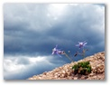
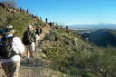
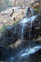
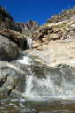
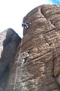
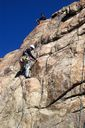
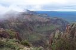
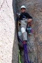
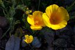
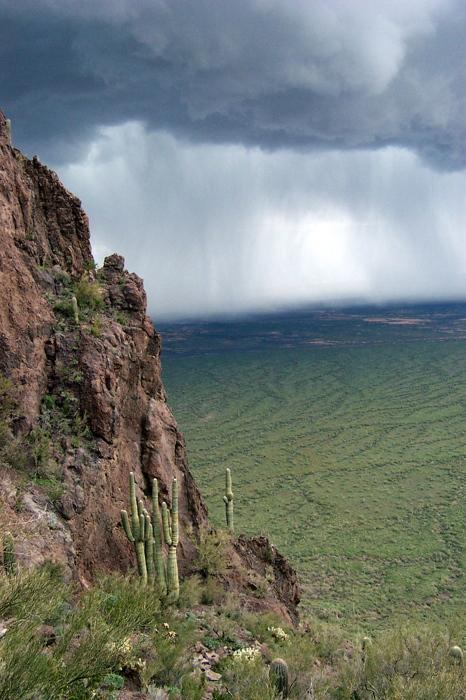
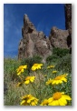
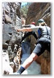
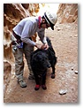
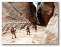
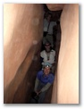
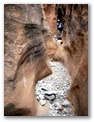
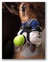
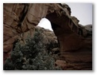
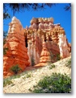
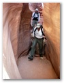
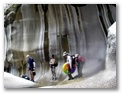
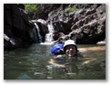
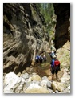
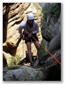
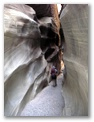
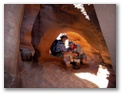
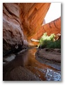
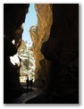
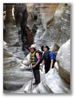
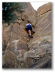
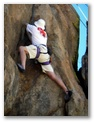
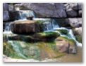
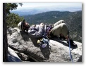
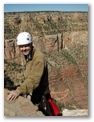
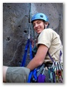
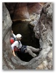
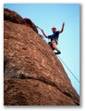
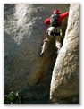
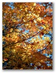
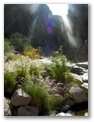
Most of the photos are uploaded from Kathy's 2.2 megapixel digital camera (Kodak DX3600).
- Jan. 15, National Trail Trek (6 photos), 9th annual hike at South Mountain
- Jan. 16, Esperero Canyon (20 photos), day hike at Sabino Canyon
- Jan. 17, Seven Falls (58 photos), day hike at Sabino Canyon
-
Feb. 5, Lower Devils Canyon,
rock climbing at Queen Creek
° Kathy's photos (photos on Blogger )
° Richard's photos - Feb. 13, AMC Lead School, rock climbing class at Watson Lake
-
Feb. 19,
Superstition Ridge Line, annual
day hike
° Kathy's photos
° Richard's photos - Feb. 26, Lead School, lead climbing make-up day
-
Feb. 27,
Hawes/Miners Trail Loop,
wildflower hike
° Kathy's photos
° Jonathan's photos (temporary) -
Mar. 5, Picacho Peak, annual
day hike
° Kathy's photos
° Robert's photos - Mar. 11, Relay for Life, all-night walk to fight cancer
- Mar. 26, Seucito Canyon loop, wildflower day hike and camping
-
Mar. 27,
Ballantine Trail (small part),
wildflower day hike
-
Apr. 2, Weaver's Needle,
wildflower day hike and rock climbing
° Kathy's photos
° Richard's photos - Apr. 3, The Hand, rock climbing
- Apr. 23, Cibecue, canyoneering at the ACA Spring Rendezvous
The Kodak camera got soaked and died at Cibecue. The following photos are from Kathy's new Pentax Optio WP digital, waterproof camera. It's not as easy to get good photos with the new camera, but it's much smaller and canyon-proof. (Note that the filename is the time the photo was taken.)
-
Annual Utah Canyoneering Trip
- May 28, Drive to Utah
- May 29, Cistern and Ramp Canyons, canyoneering
- May 30, Baptist Draw and Upper Chute, canyoneering
- May 31, Leprechaun Canyon, canyoneering
- Jun. 1, Maidenwater Middle Fork, canyoneering
- Jun. 2, Maidenwater South Fork, canyoneering
- Jun. 3, Capitol Reef, hiking and touristing (rainy day)
- Jun. 4, Drive to Bryce Canyon and hike
- Jun. 5, Wire Pass hike and drive home
- Jun. 11, Upper Salome, canyoneering
- Jun. 19, Christopher Creek, canyoneering
- Jun. 25, James Canyon, canyoneering
- Jun. 26, Sundance Canyon, canyoneering
- Jul. 9, Chevelon Crossing Flowers, hiking
- Jul. 2, Round Valley Draw, canyoneering
- Jul. 3, Peek-a-boo, Spooky, Brimstone, canyoneering
- Jul. 4, Coyote Gulch, canyoneering
- Jul. 5, Willis Creek, canyoneering
- Jul. 17, Bear Canyon, canyoneering
- Jul. 23, Granite Dells, rock climbing
- Aug. 20, Watson Lake, rock climbing
-
Aug. 27,
Christopher Creek, canyoneering
° Kathy's photos (plus prickly pear prep)
° Mike's photos - Sep. 3-5, Tahquitz, rock climbing
- Sep. 17-18, Grand Canyon cleanup and climbing
- Oct. 1-2, AMC Lead School, rock climbing
-
Oct. 8, Parker Canyon,
canyoneering
° Kathy's photos
° Bill's video
° Anna's photos - Oct. 15-16, AMC Basic School, rock climbing
- Oct. 22, Pinnacle Peak, grad climb
- Oct. 30, West Fork of Oak Creek, fall colors hike
- Dec. 3, Lower La Barge Narrows, hiking
- 2005, Kathy's favorites, various photos
Updated Wednesday, December 28, 2005